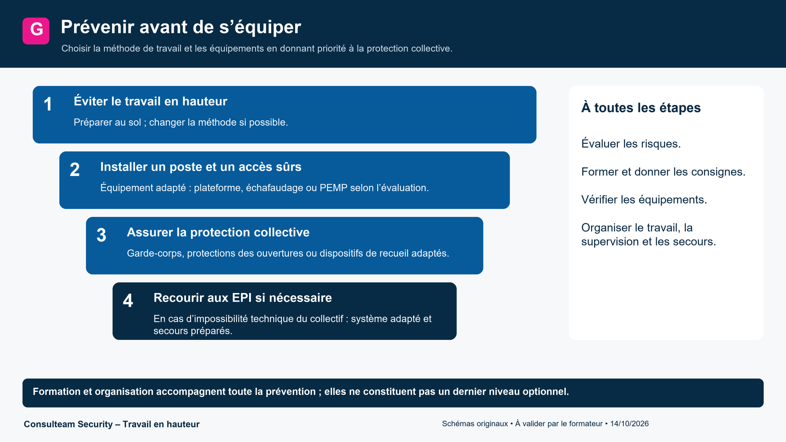
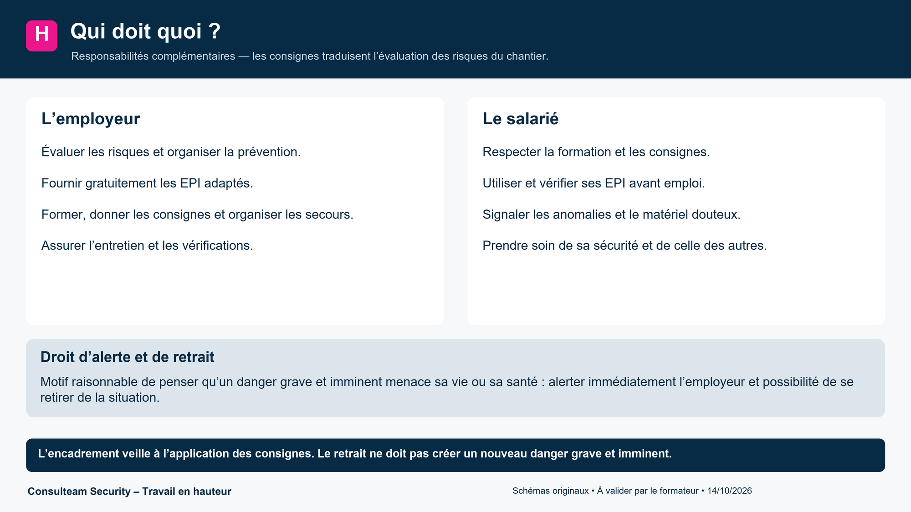
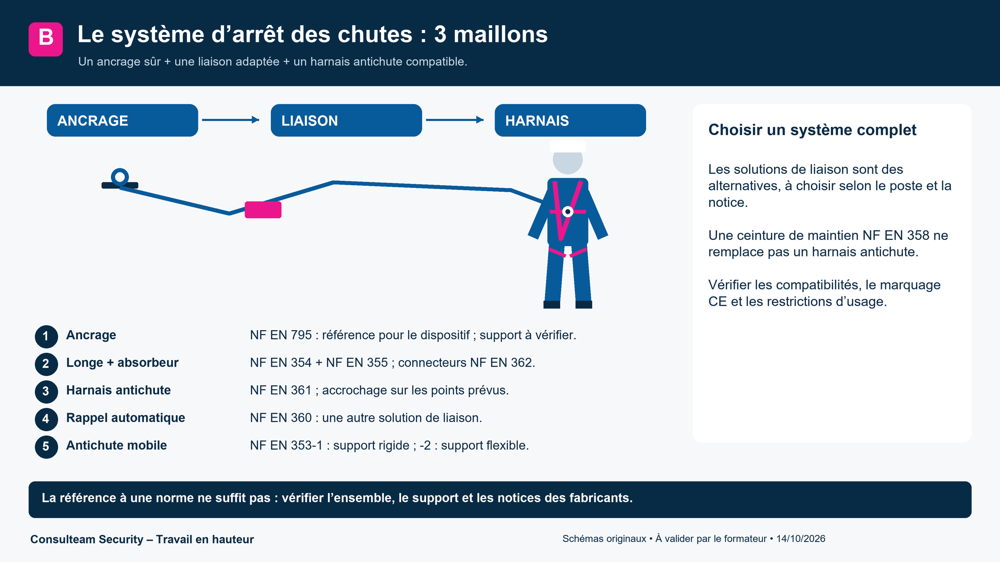
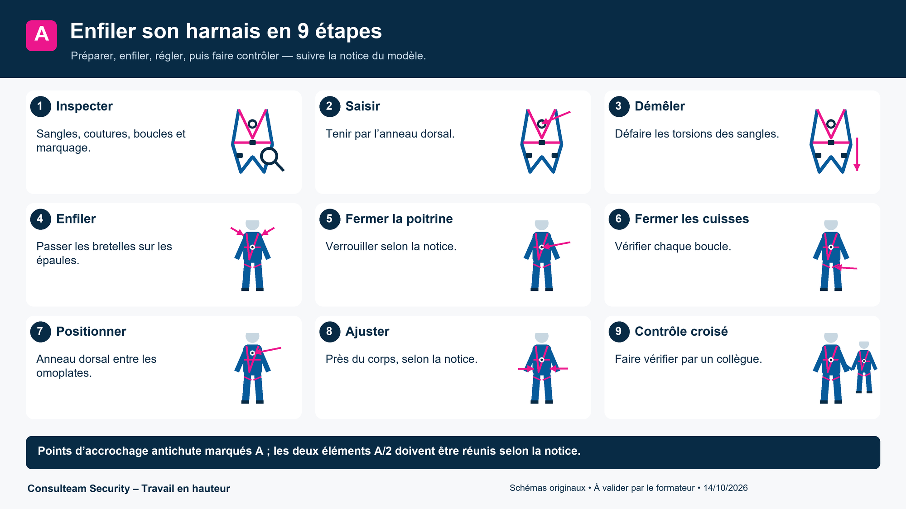
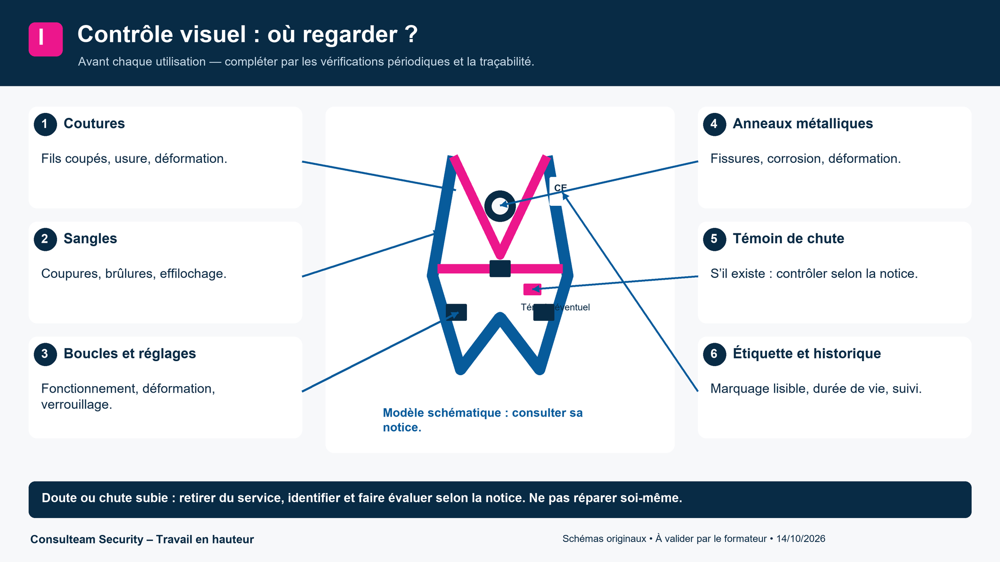
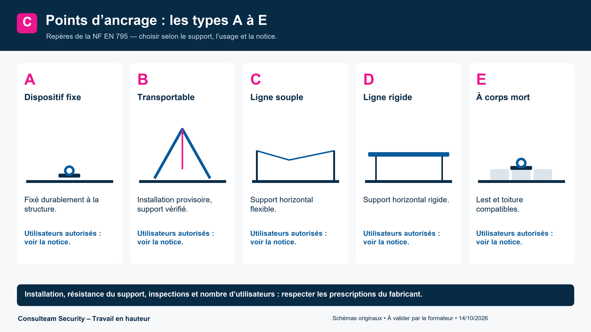
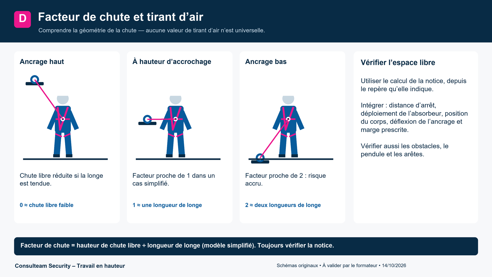
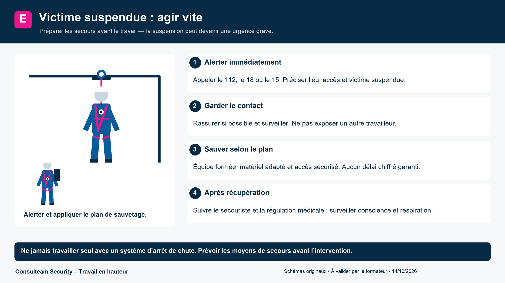
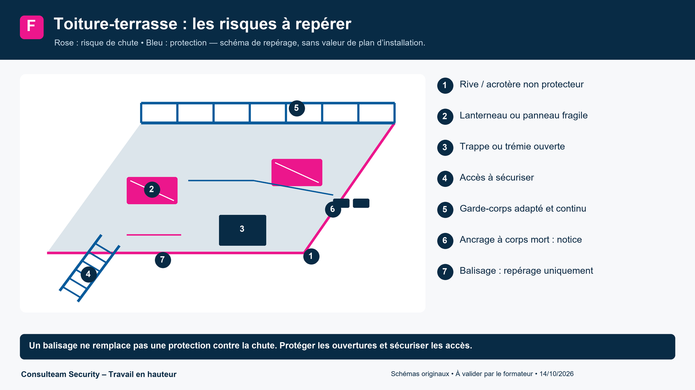

Compléments : normes, ancrages, chute et secours
Les repères à garder en tête en plus du support : quelle norme pour quel composant, quel ancrage, quelle chute, que faire d’une victime suspendue. Dans le doute, la notice du fabricant et la consigne du site priment.
Prévenir avant de s’équiper

- Éviter le travail en hauteur : préparer au sol, prévoir un accès permanent.
- Protection collective : garde-corps, filets, plateformes (elle protège tout le monde sans geste de l’opérateur).
- Équipement de travail adapté : échafaudage, plateforme élévatrice mobile de personnel (PEMP), échelle en dernier choix.
- Protection individuelle contre les chutes (harnais, longe) quand les mesures précédentes ne suffisent pas.
- Formation, autorisation, supervision : on ne s’improvise pas utilisateur.
Repère : principes généraux de prévention, article L.4121-2 du Code du travail ; travaux temporaires en hauteur, articles R.4323-58 et suivants (à confirmer sur Légifrance avant diffusion).
Droits et obligations

L’employeur
- Évalue les risques et formalise le résultat (document unique).
- Fournit les EPI adaptés, les entretient et les remplace : ils sont à sa charge (R.4321-4).
- Forme et informe, fait vérifier le matériel.
- Organise les secours avant le début du travail.
Le salarié
- Applique les consignes et utilise correctement les EPI.
- Contrôle son matériel avant chaque usage.
- Signale toute anomalie ou situation dangereuse.
- Ne prend pas de risque pour lui ni pour les autres (L.4122-1).
En cas d’accident, la responsabilité pénale de l’employeur ou de son délégataire peut être engagée (homicide ou blessures involontaires, articles 221-6 et 222-19 du Code pénal), sans exclure celle de l’exécutant. À confirmer avant diffusion.
Composants du système d’arrêt des chutes et normes

Un système d’arrêt des chutes est une chaîne de trois maillons : l’ancrage, la liaison, le harnais. Si un maillon est mal choisi ou défaillant, toute la chaîne l’est.
| Composant | Norme européenne | À retenir |
|---|---|---|
| Harnais d’antichute | EN 361 | Seul le harnais d’antichute arrête une chute. Anneau dorsal ou sternal. |
| Longe | EN 354 | Longueur limitée, jamais rallongée par un nœud. |
| Absorbeur d’énergie | EN 355 | Limite l’effort sur le corps. Longe + absorbeur : jamais plus de 2 m en tout. |
| Connecteur (mousqueton) | EN 362 | Verrouillage manuel ou automatique, contrôlé à chaque usage. |
| Antichute à rappel automatique | EN 360 | Câble ou sangle qui se rétracte, bloque en cas de chute. |
| Antichute mobile sur support d’assurage | EN 353-1 (rigide) / 353-2 (flexible) | Coulisse sur rail ou corde dédiée : support et antichute vont ensemble. |
| Dispositif d’ancrage | EN 795 | Types A à E, voir plus bas. |
| Ceinture de maintien | EN 358 | Maintient en position de travail, n’arrête pas une chute. |
Valeurs et versions de normes : à confirmer sur la notice du fabricant ou le site de l’INRS avant impression.
Enfiler son harnais en 9 étapes

- Vérifier l’état : sangles, coutures, boucles, marquage.
- Saisir le harnais par l’anneau dorsal.
- Démêler les sangles et les laisser pendre.
- Passer les bretelles sur les épaules.
- Fermer la sangle de poitrine.
- Fermer les sangles de cuisses.
- Placer l’anneau dorsal entre les omoplates.
- Serrer et ajuster : une main à plat doit passer sous la sangle, pas davantage.
- Contrôle croisé par un collègue.
Contrôle visuel : où regarder ?

Un doute : on retire du service et on signale. Une chute, même arrêtée, retire l’équipement du service jusqu’à avis du fabricant ou d’une personne compétente.
Au-delà du contrôle avant usage, des vérifications générales périodiques existent (arrêté du 19 mars 1993 : vérification au moins tous les 12 mois par une personne compétente, résultats consignés au registre de sécurité). À confirmer avant diffusion.
Points d’ancrage : types A à E

| Type | Nom | Exemple |
|---|---|---|
| A | Point fixe | Ancrage scellé ou fixé à la structure |
| B | Ancrage transportable provisoire | Trépied, sangle autour d’une structure, ancrage de toiture |
| C | Ligne de vie horizontale souple | Câble ou corde entre deux points |
| D | Ligne de vie horizontale rigide | Rail sur lequel coulisse un chariot |
| E | Corps mort | Lest posé sur toiture-terrasse |
Facteur de chute et tirant d’air

Facteur de chute = hauteur de chute libre ÷ longueur de longe. Facteur 0 : ancrage au-dessus de la tête. Facteur 1 : ancrage au niveau du harnais. Facteur 2 : ancrage sous les pieds, à éviter.
Exemple (ordre de grandeur, à vérifier avec la notice)
Longe de 2 m, ancrage à hauteur du harnais, facteur 1 : chute libre jusqu’à 2 m. S’ajoutent le déploiement de l’absorbeur (jusqu’à 1,75 m), la taille de l’utilisateur jusqu’aux pieds et une marge de sécurité d’environ 1 m. Il faut donc un vide sous les pieds de l’ordre de 6 m : en dessous, la chute n’est pas arrêtée avant le sol.
Victime suspendue : agir vite

- Alerter immédiatement (15, 18 ou 112) et donner le lieu exact.
- Rassurer la victime et ne jamais rester seul.
- Décrocher selon le plan de sauvetage prévu, avec le matériel prévu.
- Allonger puis surveiller jusqu’à l’arrivée des secours.
Délais précis et gestes de secours : à valider par le formateur et par le plan de secours du site.
Toiture-terrasse : risques à repérer

- Bord de toiture et acrotère bas : un acrotère bas ne protège pas d’une chute.
- Lanterneaux et plaques fragiles : on ne marche pas dessus, on les protège ou on les balise.
- Trappes et trémies : fermées ou protégées.
- Accès : échelle bien fixée, dépassant d’au moins 1 m.
- Protections : garde-corps provisoire, ligne de vie sur corps morts, balisage de zone.
- Météo : vent, pluie et verglas : on arrête.
Lexique
- Antichute
- Dispositif qui bloque la chute et en limite les effets.
- Absorbeur d’énergie
- Élément qui dissipe l’énergie de la chute et limite l’effort sur le corps.
- Ancrage
- Point ou dispositif auquel on relie l’équipement.
- Corps mort
- Lest, sans fixation à la structure, qui sert d’ancrage.
- EPI
- Équipement de protection individuelle.
- EPC
- Équipement de protection collective.
- Facteur de chute
- Rapport entre la hauteur de chute libre et la longueur de longe.
- Longe
- Liaison entre le harnais et l’ancrage.
- PEMP
- Plateforme élévatrice mobile de personnel (nacelle).
- Tirant d’air
- Vide libre nécessaire sous les pieds pour arrêter la chute sans toucher le sol.
- Suspension inerte
- Situation d’une personne restée suspendue au harnais sans pouvoir se dégager.
- VGP
- Vérification générale périodique d’un équipement.